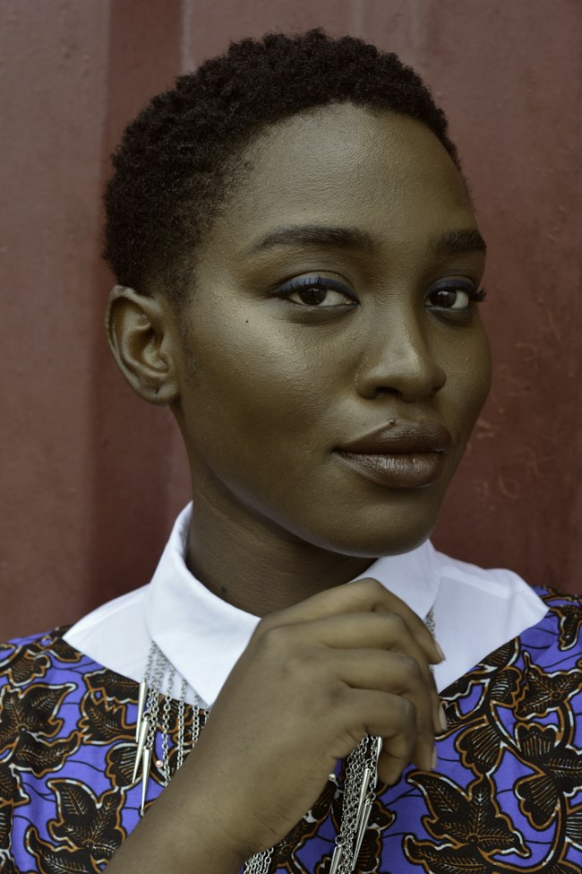
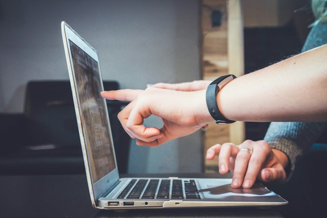

Дизайн інтерфейсів
Макет застосунку для нотаток.
Мене звати Марта. Я малюю макети сайтів і застосунків.
Переглянути роботи
Люблю працювати з кольором, шрифтами та ілюстраціями.
Спочатку роблю ескіз, потім збираю макет і дивлюся, як він виглядає на телефоні.
Макет застосунку для нотаток.
Каталог товарів для маленького магазину.
Малюнки для серії плакатів.
Афіша для студентської події.

«Я зазвичай починаю з чернетки на папері. Так швидше перевірити, чи зручно розташовані блоки».
Прототипи в Figma.
Композиція і робота зі шрифтами.


